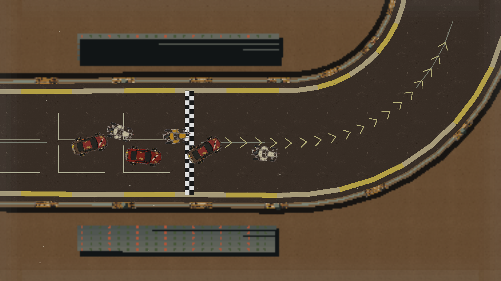
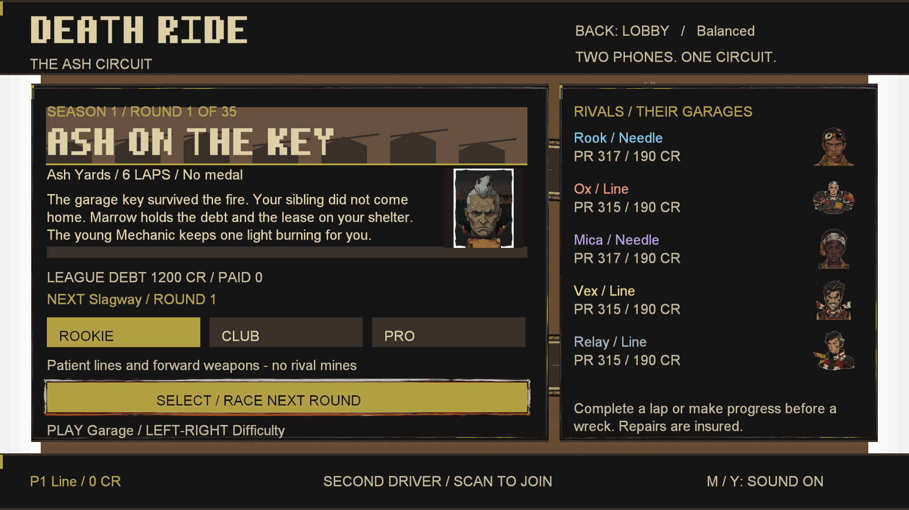

DIVISION scrap · BOSS Rook
Ash Yards
Dry soot fall; cool overcast; brittle dust and sorted salvage.

LOOK CANDIDATE · OWNER NOT REVIEWED
- accent
#B4A044 - asphalt
#39302A - dirt
#65513D - gravel
#756047 - sand
#8C704B - salt
#ACA080 - ice
#8C8879 - snow
#B8AE91 - oil
#171513 - kerb
#A69A78
Place, props, weather and evidence
Approved ground variants
- asphalt: g1-scrap-asphalt-tint-v1 — Keep ? owner approved 2026-10-04
- dirt: g1-scrap-dirt-tint-v1 — Keep ? owner approved 2026-10-04
- gravel: g1-scrap-gravel-tint-v1 — Keep ? owner approved 2026-10-04
The fallback selector substitutes original materials plus regional tint, or fully procedural scenery. These choices do not change the road surface physics.
Burned vehicle sorting yards outside the workshops. Marrow owns the debt; Rook controls the gate and becomes the first ally after defeat. Scrap 1's ash on the key and scrap 6's numbers under soot are literal environmental clues: useful metal is sorted; tagged only later with game typography; and hauled toward the foundry. The Mechanic's improvised garage belongs here.
G0 plot and region bible · Individual G1 art review
Exact kept props
 scrap pileplacement weight 3
scrap pileplacement weight 3 oil drumsplacement weight 1
oil drumsplacement weight 1 rust pylonplacement weight 1
rust pylonplacement weight 1
These reuse the owner's exact kept exports. Other new regional prop images are missing; no rejected rework image is restored. Off-road scenery does not add collision.
Presentation only
| Family | Cap | Rate | Life | 1080p size cap |
|---|---|---|---|---|
| ash | 12 | 3/s | 4 s | 12 px |
Combined cap 12; grade 0.98 / 0.95 / 0.9; vignette ≤ 0.06; edge fog ≤ 0.04. Weather uses the existing motion-particle budget and never changes grip, steering, visibility rules or AI. These stills do not demonstrate motion.
Backdrop: sorting sheds, procedural fallback. Generated panels and weather sheets are missing. The delivered G1 ground recolours are owner-approved.
Ambience hooks for later: region.scrap.wind-wire · region.scrap.sheet-creak · region.scrap.sorting-clank. No audio generated or added.
Actual campaign menu

The menu uses an in-memory division fixture, with no profile writes.
Stick evidence
Pending — shared Stick busy with dev.deathride.perf. No screenshot or frame-time delta is claimed for this region.